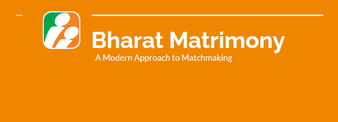

Online Matrimony Study
We studied Indian online matrimonial sites like BharatMatrimony to understand how high trust relationships are established though the internet. This project was done under the guidance of Professor. Amy Bruckman

Project Details
Arranged marriages have been deeply rooted in Southeast Asian culture for a long time. However, with families now transcending borders and advancements in technology facilitating global connections, the traditional practice of arranged marriages has also undergone digitization.
Unsurprisingly, establishing trust with strangers online is quite challenging. Particularly when it comes to matters of marriage, individuals must make life-altering decisions based on the perception they gather from a website. Our research aims to examine how people present themselves on these platforms, how they interpret subtle cues on prospective partners' profiles, and how factors such as caste, salary, and sensitive personal details influence their experience on these sites.
Project Report and Findings